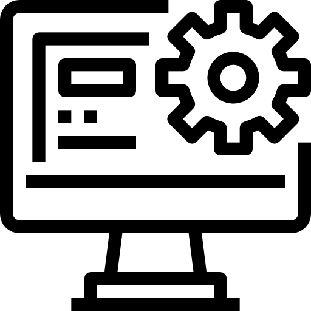

Goals
Goal: Enhancing my strategic decision-making skills will enable me to make informed and effective choices that impact project results positively. As an ERP Software Developer, being able to evaluate various solutions and choose the best course of action is crucial for both short-term and long-term project success.
Reflection: When I think about how I approached problem-solving in my role as an ERP Software Developer, I can see real growth in my ability to think strategically. By participating in planning sessions and analyzing previous decisions, I learned to step back and evaluate situations with a broader perspective. One particular instance stands out: I suggested an alternative approach to a process that ultimately saved the team time and reduced resource waste. The positive feedback from my supervisor validated my efforts and showed me that structured problem-solving is as much about preparation as it is about execution. This journey has deepened my confidence in my ability to make impactful decisions.
Goal: Developing my skills in project planning and execution will allow me to contribute more effectively to project timelines and resource management, ensuring that projects progress smoothly and are completed on time.
Reflection: Improving my project planning and execution skills has been a rewarding challenge. Taking on responsibilities like scheduling and milestone tracking gave me the confidence to approach complex workflows with clarity. One project, in particular, tested these skills when unexpected delays threatened the timeline. By leveraging project management tools and best practices, I adjusted the schedule and kept the team aligned. It felt gratifying to see the project delivered on time, even with the hiccups along the way.
Goal: Strengthening my collaboration and teamwork skills is a priority, as effective teamwork enhances productivity and creates a supportive work environment
Reflection: Teamwork has always been something I valued, but this goal allowed me to intentionally focus on how I contribute to a group. I found that leading smaller initiatives helped me build confidence and connect with my colleagues on a deeper level. During one collaborative project, I made a point of fostering open dialogue, ensuring everyone’s voice was heard. The result wasn’t just a better product but also a stronger sense of camaraderie within the team. Feedback from my peers highlighted my efforts in promoting collaboration, which was incredibly motivating.
Goal: improving my personal efficiency and adaptability is essential for managing workloads effectively and responding to unexpected changes in projects.
Reflection: Focusing on my personal efficiency and adaptability has been an engaging process. Creating daily and weekly plans kept me on track, and I noticed significant improvements in how I prioritized tasks. A moment that really tested my adaptability came when an urgent project was handed to me last-minute. By staying organized and leaning into the challenge, I managed to complete the task on time without compromising the quality of my other work. Documenting these instances showed me how far I’ve come in managing stress and staying productive under pressure.
Overall, my second co-op term was an incredibly valuable experience that allowed me to grow both professionally and technically. Leading a project to develop a device management system using C#, Blazor, and Bootstrap gave me hands-on experience with full-stack development and deepened my understanding of how to create scalable, efficient solutions. Working on both the backend and frontend, as well as designing the database, taught me how different components of a system come together to address real business needs.
Beyond technical skills, I gained valuable insight into working with clients and managing expectations. Collaborating with the IT department to gather requirements and training them on the system emphasized the importance of communication and adaptability. This experience reinforced how crucial it is to not only build a functional product but also ensure it meets the needs of the people using it.
Reflecting on my time in this role, I’m proud of what I accomplished and grateful for the lessons I learned. From improving my coding abilities to gaining confidence in project ownership, this co-op has equipped me with skills and experiences that will be invaluable in my future career. It has solidified my passion for problem-solving through technology and has motivated me to continue building on these foundations in the years to come.
During the fall term, I had the opportunity to lead a project for the IT department where I developed a device management page using C#, Blazor, and Bootstrap. This project was designed to help manage production devices more efficiently. I was responsible for creating the entire backend, frontend, and database, which gave me valuable hands-on experience in full-stack development. Once the project was completed, I trained the IT team on how the system works and how to use it effectively.
This experience was a significant milestone for me. It not only strengthened my technical skills but also taught me the importance of working closely with clients to meet their needs. From gathering requirements to delivering the final product, I learned how to navigate the challenges of building a solution tailored for end-users. Additionally, leading this project allowed me to refine my communication and teaching skills as I guided the IT team through the system's features.
Job Description